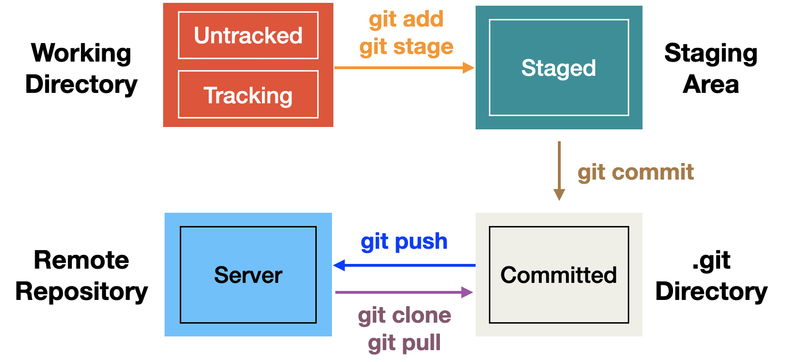

이 게시물에서는 git이 작동하는 원리를 소개하며, pro git을 참고하였다.
용어 정리
Git을 사용 혹은 공부하다 보면 흔하게 볼 수 있는 단어들을 소개하며 시작하겠다. Git의 원리에 대해 알아보면서 다시 한번 용어들도 설명할 것이다.
- repository
저장소. local repository와 remote repository로 나뉜다. - local (repository)
데스크탑 혹은 공용 서버 환경과 같은 우리가 실제로 작업하는 공간이다. - remote (repository)
Github와 같은 우리가 local repository에 만들어둔 commit들을 클라우드 서비스처럼 원격으로 저장하는 서버이다. - untracked/tracking
파일의 변화를 git이 체크하고 있지 않을 때 파일이 untracked 상태라고 한다.
반대로 git이 파일의 변화를 체크하는 경우 git이 파일을 tracking한다고 표현한다. - commit
git이 tracking하는 파일들에 대해, 각 파일이 이전에 비해 얼마나 달라졌는지를 저장한 snapshot이다. - unstaged/staged
git이 tracking하는 파일들 중 commit할, 즉 변경사항을 저장할 준비가 된 파일들은 stage된 상태이다.
반대로 수정이 덜 되었다는 등의 이유로 commit할 준비가 되지 않은 파일들은 unstaged 상태이다. - HEAD
local repository에서의 현재 commit(snapshot)의 위치 - “origin/master”
origin은 local과 remote repository를 연동시킬 때 일반적으로 설정하는 remote repository의 이름이다. 다시말해, local 환경에서 remote (github)를 부르는 별명 같은 개념이라고 생각하면 된다.
master는 프로젝트에 대해 git을 initialize하였을 때 기본적으로 지정되는 최초의 브랜치 이름이다. 브랜치는 다른 포스트에서 따로 다루도록 하겠다.
Git의 세가지 상태
Figure 1에서는 Git이 어떤 식으로 관리되는지를 보여준다. Git에는 크게 세 가지 상태가 있다.
- Committed: 데이터가 “local” 데이터베이스에 저장된 상태
- Modified: 수정한 파일을 “local” 데이터베이스에 아직 commit하지 않은 상태
- Staged: 현재 수정한 파일을 곧 commit할 것이라고 표시한 상태

Figure 1. The basic structures of git
.git directory는 프로젝트의 모든 것들이 저장되는 곳을 말한다. 프로젝트의 각 버전들이 snapshot 형태로 SHA-1 hash 암호화되어 저장되어 있다. Working directory의 경우 .git directory에 있는 여러 가지 버전들 중 특정 버전을 보여주는 것 뿐이고, 우리는 이를 그 버전이 checkout 된 상태라고 부른다. Staging area는 .git directory에 있다. 이는 단순한 파일이며 곧 commit할 파일들에 대한 정보를 저장한다. Figure 1에서 설명하는 git이 기본적으로 하는 일의 순서는 다음과 같다.
- Working directory에서 파일을 수정한다.
- Staging Area에 파일을 Stage 해서 commit할 snapshot을 만든다. 모든 파일을 추가할 수도 있고 선택하여 추가할 수도 있다.
- Staging Area에 있는 파일들을 commit해서 .git directory에 영구적인 snapshot을 저장한다.
Basic workflow

Git의 동작 원리를 앞으로 살펴볼 명령어들과 함께 좀 더 자세하게 알아보자. 내 생각으로는, git의 동작원리는 크게 두 갈래로 나눌 수 있다. local repository 에서의 작업과 local repository와 remote repository 사이의 연동이다. 이 두 가지 갈래에서 설명을 진행하도록 하겠다.
Local repository에서의 작업
-
git add/git stage
git add혹은git stage명령어는 각 파일들을 stage 상태로 만든다. stage 상태는 앞서 언급한 것처럼 commit 하기 전 상태로, 파일의 변화를 snapshot 형태로 만들어 저장할 준비가 된 상태이다.
새로 만들어진 파일, 혹은 다른 장소에서 옮겨온 파일들은 모두 untracked 상태, 즉 git이 파일의 변화를 tracking하지 못하는 상태이다.git add,git stage명령어는 untracked 파일과 tracking 하는 파일 모두를 staged 상태로 만든다. 이 때 untracked 파일은 자동적으로 git 이 tracking 하게 된다. -
git commit
변화를 기록하고자 하는 파일들을git add,git stage로 stage 상태로 만들고 나면, 파일 변화의 snapshot들을 저장해야 한다. Stage 상태의 파일들을 local repository의 .git directory에 저장하게 하는 명령어가git commit이다.
Local repository와 remote repository사이의 연동
Remote repository 는 github와 같은 server 환경이고, local repository은 데스크탑과 같은 local 환경이다.
Local repository는 파일들이 실시간으로 바뀌기 때문에 remote repository 에 올라가 있는 상태보다 보통 변경 사항이 앞서있다.
이러한 점을 생각하면서 다음 과정인 git push 에 대해 알아보자.
-
git push
git commit명령어로 local repository 파일 변화 snapshot 들을 저장한다고 해서 완벽하게 백업이 되는 것은 아니다. 이 때까지 우리가 살펴본 것은 local 환경에서 진행되는 것이기 때문에rm -rf와 같은 무시무시한 명령어로 .git directory 자체가 삭제 되면 변경 사항들이 모두 사라진다. 이와 같은 불상사를 방지하기 위해 클라우드 서비스와 같이 우리의 .git directory들을 서버에 올리거나 다운 받을 수 있게 한 것이 바로 github이다(gitlab, bitbucket도 비슷한 사이트이다).
git push를 하게 되면, 현재까지git commit으로 저장된 snapshot들이 서버에 올라가게 된다.git push명령어에 대해 공부하다 보면 가장 흔하게 볼 수 있는 것이git push origin master라는 명령어이다. 이는git push명령어와 같은 의미를 가지며, 여기서의origin은 local repository에서 remote repository를 칭하는 것이고master는 브랜치의 이름이다. 브랜치는 또다른 복잡한 개념이므로 다른 포스트에서 설명하도록 하겠다.
정리하자면,git push origin master는 현재까지 local repository 에서 바뀐 파일들에 대한 snapshot을origin이라는 이름을 가진 remote repository 의master라는 이름의 브랜치에 업데이트 하라는 것이다. -
git pull/git clone
마지막을 살펴볼 명령어는git pull과git clone은 모두 remote repository, 즉 server에 올라가 있는 snapshot들을 local repository로 가져오는 것이다.
git pull은 remote server가 등록된 local repository 에서 사용할 수 있으며 이 명령어를 사용하면 remote repository 에 올라가진 commit을 그대로 local repository 에 가져올 수 있다.git push와 마찬가지로git pull origin master는origin이라는 remote repository 에서master브랜치의 가장 최신 commit 을 가져오는 것이다.
git clone은 이미 만들어진 remote repository를 그대로 복사를 하는 것이다.git pull의 경우 git 이 initialize 된 directory 에서 등록된 remote repository 의 정보를 들고 오는 것인 반면,git clone은 remote repository 자체를 그냥 복사하여 새로운 directory를 만드는 것이다.